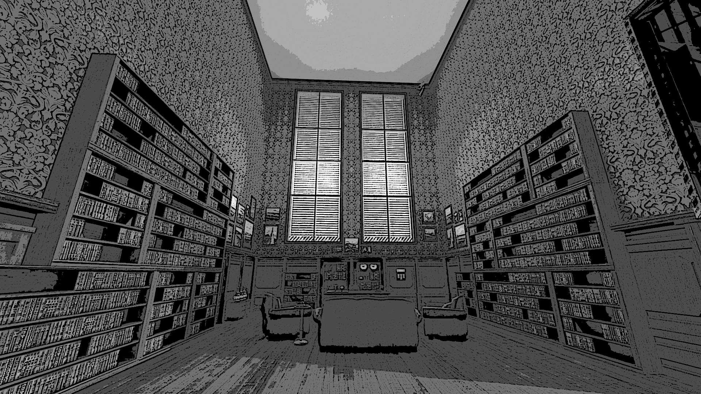

NARRADOR: Estênio faz uma viagem surpreendentemente curta e chega à uma sala ampla e bem decorada. Uma mesa em madeira bem trabalhada se encontra no final de um lance de escadas. Prateleiras cheias de livros se encontram nas paredes desse lugar. Curiosamente todos eles parecem conter a palavra business em seus títulos. Um papel de parede chique em uma cor chique com detalhes chiques completam a sala.
NARRADOR: Essa deve ser a sala do chefe, Estênio concluiu. Mas onde essa figura mitológica se encontra? Estênio olha em volta e não encontra ninguém, apenas um telefone na mesa e um quadro de quem seria o seu chefe. Provavelmente se ele ligar para alguém ele possa saber onde ele está.
Narrador: Estênio pega o telefone na esperança de poder falar com algum de seus colegas, mas o telefone está mudo. Porém, a parede atrás da mesa se levanta revelando uma passagem para, adivinha só, um novo corredor. Estênio se apressa e passa pelo corredor, ele parece estar impaciente.